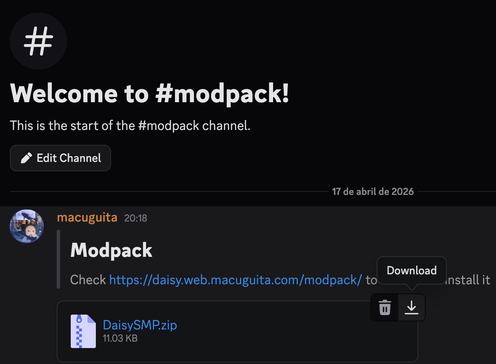
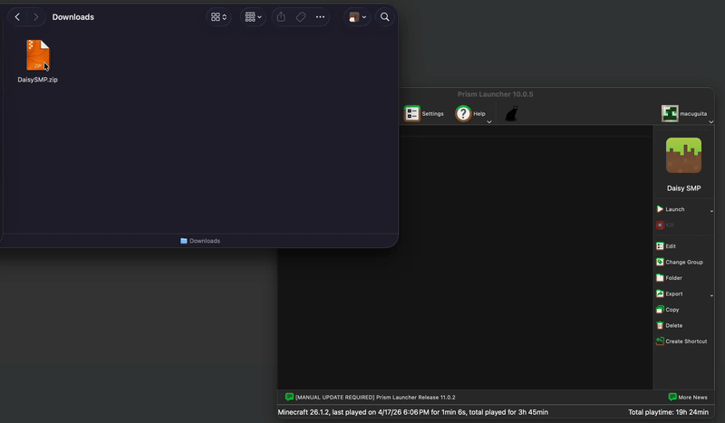
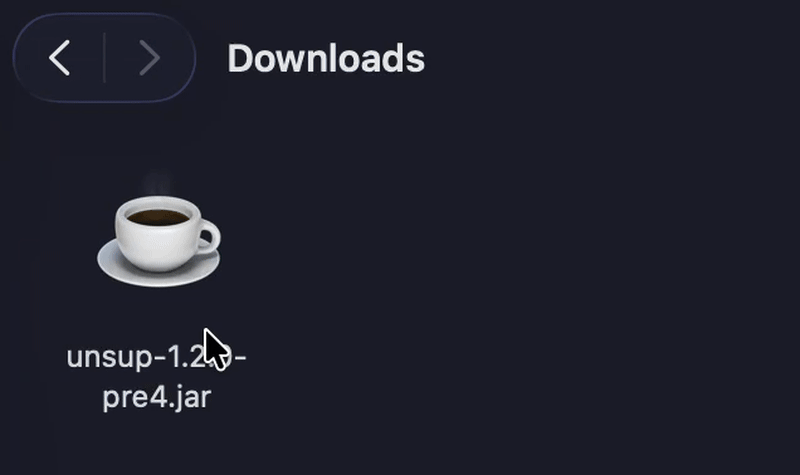
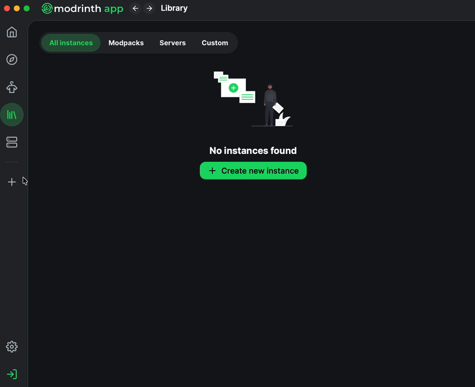
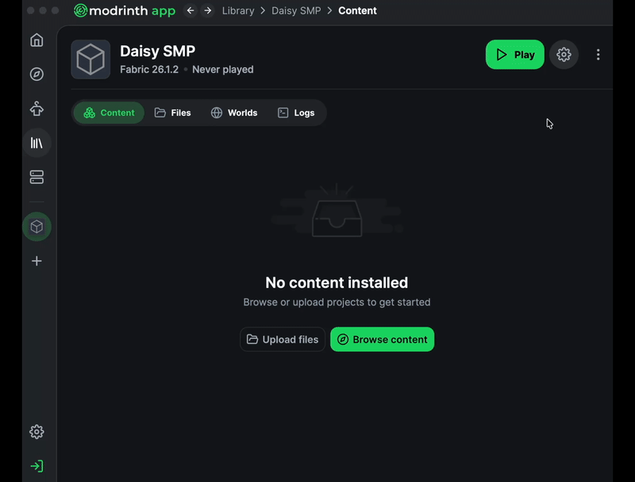
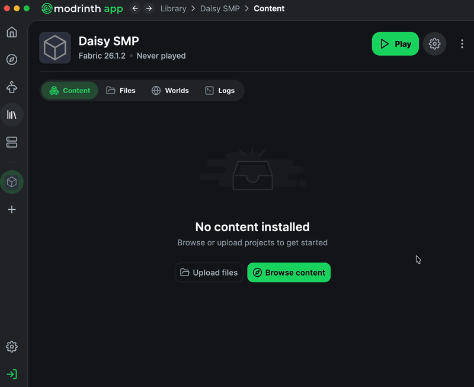

📦 Install the Modpack
Pick the method that works best for you. Both will get you in-game with the full modpack.
Prism Launcher
Easiest setup — just download a zip and drag it in. No manual steps.
→Modrinth Launcher
A bit more setup, but it is better than the default.
→Prism Launcher
Download the modpack zip from Discord
Head to the #modpack
channel in the DaisySMP Discord and download the DaisySMP.zip file pinned
there.

Drag the zip into Prism Launcher's Instances window
Open Prism Launcher. Simply drag and drop the DaisySMP.zip file
directly onto the Instances window. Prism will automatically import and set up the modpack
for you.

💡 Once the import finishes, you're done! Click the instance and hit Launch.
Modrinth Launcher
Download unsup
Download the unsup jar from Modrinth: modrinth.com/mod/unsup. Grab
the latest version's .jar file.
Download the unsup.ini config file
Download the configuration file unsup.ini with this link — or you can copy the contents and paste
them into a new text file, then save it with that exact name.
version=1 preset=minecraft source_format=packwiz source=https://daisy-smp.github.io/modpack/pack.toml [colors] background=F3ECDD progress=EDC242 button=EDC242 title=000000 subtitle=000000 progress=66AB32 progress_track=223A0B dialog=000000 button_text=000000 question=66AB32 info=000000 [branding] modpack_name=DaisySMP icon=cW9pZgAAACYAAAAmBAAA/dz/AAAA/8MA3jX+1dS+uP3BCjUA3DUKKsMKNQDXNcEANSrFNQA1wQDSNQoqwDXAKsEKKsE1wCrACjUA0DUKKsI1CioKwCrACjUqwgo1AM81KsQ1CsD+sK+dCsA1CirDNQDPNSrBOyrBNcQqwDsqwTUAzzUKKsE7CjX+z6IA/vXAAMEMNQo7KsEKNQDQNQoqwAo1FMU1CirACjUA0TXDDBTFDDXCANE1CirAOzUUwDUUwTUUwDU7Kgo1wADONQoqwjUUxzUqwQrANQDNNSrBCjs1DBQ1FME1FAw1OwoqwAo1AM01KsM1/riQABTANcEUwC01KsIKNQDONSrBCjXADBTDLTXACirACjUA0DUKwDXAOzUtDMEtNTs1wArANQDSNcEKKgo1wwoqCjXBANQ1CirBCjs1OwoqwQo1ANU1CirDNSrDCjUA1jUKKsEKNTsqwjUA0zXAAME1CsE1/hk7ADUKwTUA1DX+S60ANcAAwDXC/jBuADXCANU1N8E1wADBNf49jAA1ANg1Nyg3wTUAwDU3NQDANcIA0zU3KzfAKDUANTc1ADUoN8AoNQDSNTfAKyjANQA1NzXAKzXBNyg1ANI1KMArKDXAJyg1JzUAwTU3NQDTNSjAK8A1KCc1KzUAwTU3NQDUNcM3NcAoJzUANTcoNQDYNTc1ADUrJzU3KDUA2TUoJzXBKDcoNQDbNSg3wSs1wADdNcMA/dsAAAAAAAAAAQ==
Rename the jar to unsup.jar
Find the downloaded jar file — it will be named something like unsup-1.x.x.jar.
Rename it to exactly unsup.jar (remove the version number).

Create a new instance in Modrinth Launcher
Open the Modrinth Launcher and click the Create new instance button.

Choose Custom Setup and name your instance
Click Custom Setup. Name the instance Daisy SMP (or anything you like). Then set:
🧵 Loader: Fabric — latest version (currently 0.19.2)
🎮 Minecraft version: 26.1.2
Hit Create to finish setting up the instance.
Open the instance folder
Click on your new instance in either the sidebar or the Library page. Then click the ⋯ three-dot menu at the top right of the window and select Open Folder.

Drop unsup.jar and unsup.ini into the folder
Drag both unsup.jar and unsup.ini which you should have in your downloads folder into the instance folder that just opened. Then close the file explorer and go back to the Modrinth Launcher.
Add the Java agent argument
Click the ⚙️ Settings cogwheel button at the top right of the instance window. In the settings panel that appears, click Java & Memory on the left side. Enable Custom Java Arguments, then type or paste the following into the text box:
-javaagent:unsup.jar

Close the settings window when done.